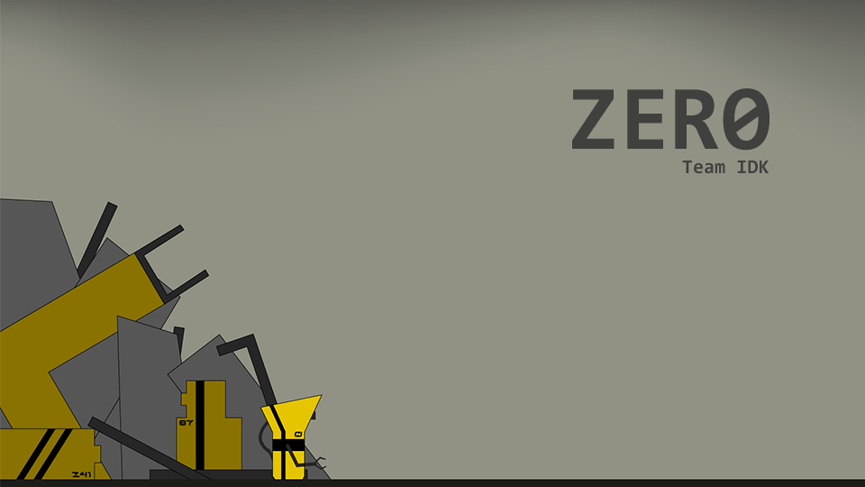

ZERO
Team: Ishpreet Sekhon, Brandyn Chew, Wan Haichao, Zoe Zhang
Role: Programmer and Narrative Design
Tools: Unity, Monodevelop, Illustrator
Goal: Create a narrative based 2D game with interesting mechanics
The Process
Game Description
ZER0 is a game made by a group of 4 for a university course on game design. This was our second time using Unity in its 2D mode to create a short and complete game, focusing on a branching narrative experience. The game follows a robot named ZER0 after he suddenly reboots in a thunderstorm and must uncover what happened.
Narrative Design
The initial idea for the game was to create a industrial art styled puzzle platforming game. The narrative was to have a few cutscenes in key moments, with backstory told throughout the environment through diagetic computer interfaces.

I designed this initial narrative structure was to create a foldback through gameplay, where your gameplay choices would affect the end story. The problem we encountered with this structure was that it only really gave the illusion of choice as users actions early on didn't really have an impact towards the end of the game, only the most recent chocie they made.

After creating a prototype in Unity I realized that I could prototype the levels rapibly by blocking them out without final assets, making the process a lot faster. This meant we could use a more "expensive" narrative structure without foldbacks. This structure branches twice, with several levels never being seen if the player didn't take that direction. While normally that would seem like a waste of resources, it gave the game a replayability that it was initially lacking and created that agency that we wanted.
Programming
As the sole programmer for the project I was in charge of the Unity editing, script coding and level implementation. The first step of this was the player character's physics. I used Unity's built in rigidbody structure to create a character with weight. I then created simple block objects to use as floors and then added checks in C# script and 2D colliders on the player to allow it to stay on platforms.


After creating the character, I had to create the implementation for the levels. To do this I created prefabs of various kinds of platforms placed throughout the levels in accordance with sketches from our team's level designer. Throughout this process, however, the scale of the actual implementation with the jumping physics for the player made it clear that the levels could not be completed. I fine tuned the player attribute values and positioning of the platforms to make it functional.

Reflection
After completing this project I gained a greater appreciation for the cost and time required in game development. The challenge of the prototyping, and learning how to block out levels, made it possible to develop the levels without needing the team to be finished their assets first. This meant that I could work on the implementation while the assets for the levels were still being worked on.